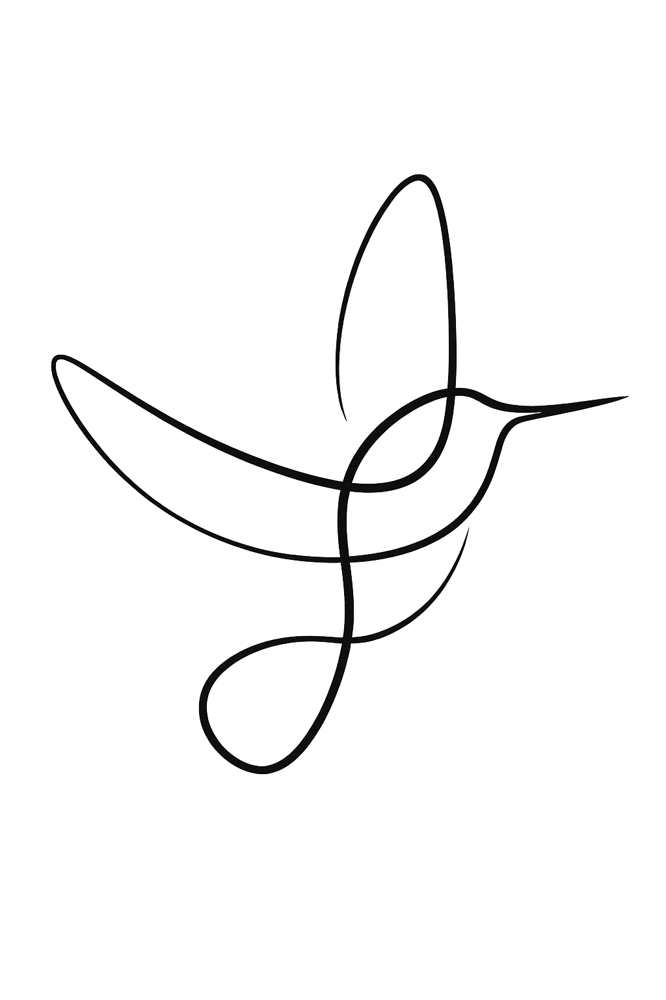

Chi Neng Qigong
Wat is Chi Neng QigongQigong bestaat al duizenden jaren en komt uit China. Het is onderdeel van Traditional Chinese Medicine en wordt door miljoenen mensen over de hele wereld dagelijks beoefend. Het woord qigong bestaat uit 2 woorden: Qi en Gong.
Qi kun je heel eenvoudig zien als levensenergie/levenskracht en Gong betekent: oefenen.
Qi is de energie die je laat bewegen, ademen en helpt herstellen. Als je genoeg qi hebt, voel je je fit, rustig en in balans. Als je weinig qi hebt, kun je je moe, leeg, gespannen en overprikkeld voelen. Met Qigong help je die levensenergie weer rustig op gang, door zachte bewegingen en aandacht. Je hoeft niets te forceren, je lichaam weet zelf wat het nodig heeft. Je stimuleert het zelf genezend vermogen van je lichaam.
Door de focus op je lichaam leer je steeds beter luisteren naar je lichaam en je gevoel. Hierdoor ontstaat meer bewustwording en kom je uit je hoofd en in verbinding met je hart. Verandering begint bij jezelf en van daaruit verandert de omgeving met je mee.

De grondlegger van Chi Neng Qigong is Dr. Pang Ming. Hij is grootmeester in verschillende qigongvormen en studeerde zowel Westerse als Chinese geneeskunde. In de jaren ‘70 van de vorige eeuw ontdeed hij de traditionele vormen van alle niet werkzame “franje” en voegde nieuwe effectieve bewegingen toe. Zo ontstond Zhi Neng Qigong: een nieuwe medische Qigong vorm met de meest werkzame elementen uit de traditionele Qigongvormen en martial arts methodes. Dr. Pang Ming richtte een medicijnloos ziekenhuis in China op, waar alle patiënten elke dag Zhi Neng Qigong beoefenden. De mensen werden medisch gekeurd voor en na de oefeningen en van meer dan 95% bleek de gezondheidstoestand verbeterd. Zhi Neng Qigong werd door de Chinese overheid uitgeroepen tot de meest effectieve qigongvorm van 11 wetenschappelijk onderzochte vormen.
Door politieke omstandigheden is het ziekenhuis in het jaar 2000 gesloten door de Chinese overheid. De duizenden beoefenaars hebben zich over de wereld verspreid waardoor Zhi Neng Qigong nu over de hele wereld bekend is en door miljoenen mensen dagelijks wordt beoefend. Deze leer is naar Europa gebracht door Patricia van Walstijn met goedkeuring van Dr. Pang Ming, onder de naam Chi Neng Qigong. Zij heeft het Chi Neng instituut opgericht in Arnhem en werkt nauw samen met teacher Li, een van de leraren uit het medicijnloze ziekenhuis om zo dicht mogelijk te blijven bij de zuivere leer en de kwaliteit hoog te houden. In het instituut in Arnhem ( https://chineng.nl/) worden ook de instructeurs opgeleid, die Chi Neng Qigong mogen geven.
Er wordt nu ook in de westerse wereld steeds meer onderzoek gedaan naar de positieve effecten van Qigong. De westerse geneeskunde is in principe gericht op het bestrijden van ziektes die mensen hebben. Traditionele Chinese Geneeskunde is gericht op het voorkomen van ziektes door het activeren van het zelfhelende vermogen van het lichaam (o.a. met Qigong en acupunctuur). De positieve werking van Qigong wordt steeds meer erkend en er zijn inmiddels 2 ziekenhuizen in Nederland die naar Chi Neng Qigong verwijzen als vorm van aanvullende zorg. Hierdoor worden bijwerkingen en gevolgen van (oncologische) behandelingen verminderd, zoals pijn en vermoeidheid.
Bron: https://cizg.nl/wp-content/uploads/2025/07/SIO-EBOOK.pdf